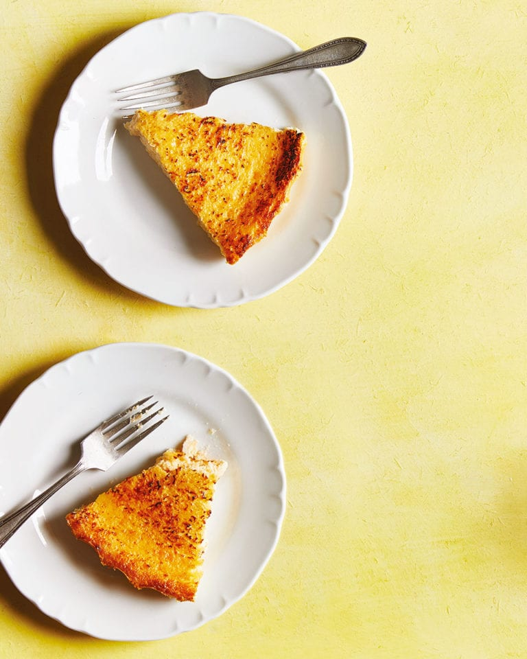

Cheesecake

Description
how about this Eliza Acton-inspired baked lemon cheesecake?
Ingredients
- A small amount of softened butter for greasing
- 110g caster sugar, plus 1 tbsp for coating the tin
- 500g brocciu cheese (see Know How), or 400g ricotta and 100g greek yogurt mixed together
- Finely grated zest of 2 lemons
- 1 tsp vanilla extract
Directions
- Heat the oven to 140°C fan/gas 3 and brush your flan tin with the butter, then scatter in the 1 tbsp sugar and give everything a good shake and a tap so it coats the surface. Next, whisk the brocciu (or ricotta and yogurt) with the zest, a splash of booze if you’re using it, and the vanilla and salt until the mixture is smooth and silky.
- In another bowl, whisk the eggs and 110g sugar until the mixture is pale, thickened and foamy, then fold in the cheese mixture until it’s well combined. Pour it into the flan tin and bake for 35 minutes. You want it to be set but still with some wobble in the middle.
- At this point, you have two choices. You can either put the cheesecake under a scorching grill for 20 or 30 seconds (don’t look away) to char the top, then chill it and serve it from the pan, or cool it completely before turning it out onto a plate. Personally, I prefer the soothing, uninterrupted pale lemon vision of the uncharred version, but it’s entirely up to you. It will keep, covered, in the fridge for a couple of days.